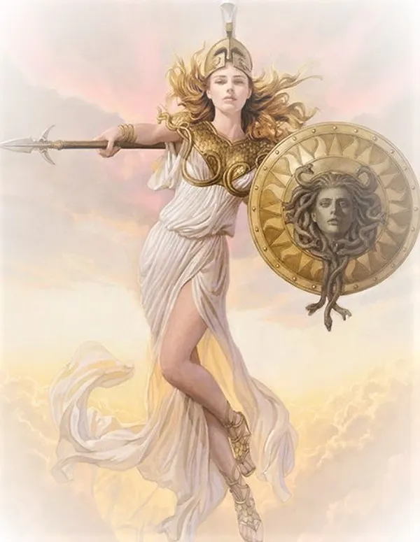
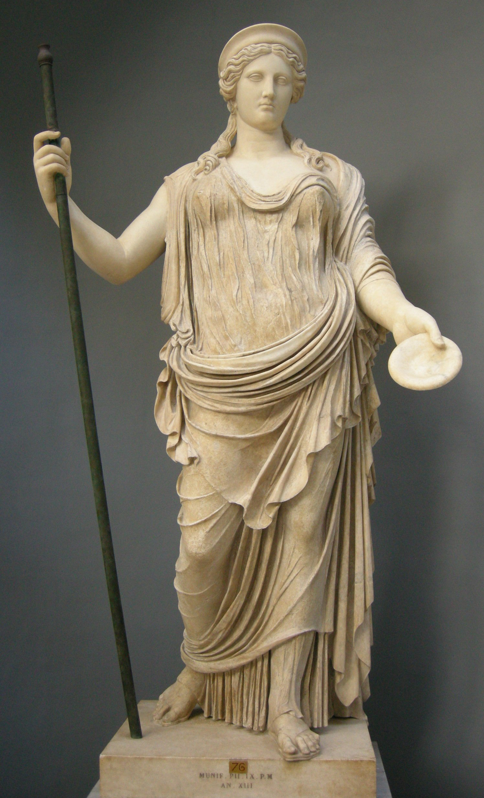

Welcome To
The Greek Archaio-Mouseio

Exhibit 1: The innovation of Medicine
Medicine is the cure to an illness that is caused by either a viral, bacterial, or fungal infection.
The invention works by killing the bacteria/virus/fungi inside of the animal’s body, usually through antiviral/antibacterial/antifungal bacteria.
It is used by either eating something or rubbing the medicine on the part of the body that is infected.
It was used in order to get rid of unneeded illnesses and to cure people’s suffering.
This invention made it possible for people to get rid of illnesses much more effectively than just waiting for the illness to be gone by itself.
Exhibit 2: The innovation of Democracy
Democracy is a system of government that lets every single citizen vote, and lets everyone who wants to become president.
This works by letting all citizens vote on who will take part in the government, and Democracy is used to make everything fair in the country so that the people have most of the power as a whole. It was used because this made it so that everyone had equal power and so that everyone could live knowing that they control the government partially. This made it so that nobody overthrows anyone and so that everyone could live in peace.
This made it so that everyone had somewhat equal rights and it made it so that the government was more fair to people.
Early Democracy in Athens only allowed Men to take part in government and voting, while the women weren’t allowed to interfere with government at all. Contrary to the olden days, today in modern-day America, our democracy includes everyone, despite their race, gender, culture, or any other factor that makes them who they are. Also, more than half of the countries today are in some kind of democracy.


Exhibit 3: The innovation of the odometer
The odometer can record the distance of one's travels or any vehicle at all.
The odometer used to be a mechanical device that counts the amount of steps of something like counting steps or a bicycle. This invention is used for journeys and having military strategies on the battlefield top see how far their troops are and such. This was used because the odometer was very useful in seeing how far a person has traveled and if they recorded on the odometer, how many steps they have remaining.
The invention impacted the Greeks' lives by having better military strategies and more organized roads. This could open to a lot of possibilities and could track how big the empire was, how big certain objects were, and give answers to a lot of questions they had.
The invention changed over time by the odometer being on cars, and different other modern inventions. This is mainly used to track distances that the car has traveled or any other vehicle. This is now online and digital like in the Health app. In Ancient Greece, they used to be mechanical with a big machine that people would have to carry around.
Exhibit 4: The innovation of the Astrolabe
The astrolabe is an instrument used to make astronomical measurements.
This invention has sets of dials that were used to determine altitude and latitude, as long as the time was known, the shifting places of stars and planets, and to survey and triangulate one's location on land.
The astrolabe told the time during day or night, found out the time of sunrise and sunset, found the length of the day, and located celestial objects found in the sky.
Greek Gods Section / Religion of Greece
Religion:
In Greek Mythology, there are 12 main gods (The Olympians) and other minor gods that the Greek used to explain how everything was created.
In those 12 main gods, there were the trio: Zeus, Poseidon, and Hades (Not part of the twelve) which are the 3 rulers of the land.
Hades rules the underworld, Poseidon rules the seas, and Zeus controls the sky.
The Greek pray to certain gods on journies or going to war.
The Greeks are very invested in their religion and the Romans even copied off of them.
About 90 percent of the population in Greece have the religion of Greek Orthodoxy.
The others are Christians (3 percent), have no religion (4 percent), Islamic (2 percent), and just others (1 percent).

Zeus:
Zeus is the god of the sky, lightning, and finally justice.
Zeus also controlled all of the weather that happened.
Zeus has even more powers like copying other’s voices as well as shapeshifting.
This is the leader of all gods.
Zeus was born with a father (Titan Kronos) and a mother (Titan Rhea) as Rhea hid Zeus from his father as Kronos was going to swallow him.
Kronos swallowed his children because he thought they would get too powerful and overthrow him, and that is exactly what Zeus did.
He cut Kronos and saved his other brothers and sisters as he won the battle and became the head of all of the gods.
Zeus’s name in Rome is Jupiter.
Zeus’ punished the people who lied to their oaths and promises.
Zeus was married to Titan Metis but swallowed her and married Hera because he was scared Metis would get too powerful.
Zeus had a lot of children as some of them have made it to the 12 olympians like Apollo or Hermes.
He also had children who were demi-gods and became very famous and were heroes.
An example of this was Hercules.
Zeus fought a Typhon because Gaea wasn’t happy with the titans being locked up.
Zeus fought this beast alone with no help and managed to defeat it.
Zeus was very cruel to the human race as he didn’t want to share the secret of fire.
He is one of the big three gods.
Poseidon:
Poseidon is the god of the ocean but not only that, he is the god of earthquakes and the god of horses.
He can create a lot of storms if he is unsatisfied.
Poseidon was a brother of Zeus and was swallowed by Kronos as he was part of the big war between the Titans and the trio.
Poseidon has created the horse as it was for possibly two reasons.
Poseidon was either in love with Demeter, and tried to impress her, or, tried to impress the people to take over Athens.
Athena won and so she was the patron and so Poseidon and Athena are rivals as they do complete opposite things.
Poseidon helped make the walls for the Trojans in the Trojan war.
Poseidon lived under the sea in a big castle that was made out of expensive minerals like jewels and underwater materials like coral.
Poseidon was the father of Percy Jackson (A hero in Greek mythology), which is a very popular series.
Poseidon’s offsprings are cyclopes, Orion, Pegasus, and theseus.
He is one of the big three gods.
Hephaestus:
Hephaestus is the god of blacksmith, craftsmith, volcanos, and fire.
He was very good with metalwork and crafts.
He could also make his work alive and move to assist him.
Hephaestus was born by Hera using a magical herb to be pregnant and Hera didn’t like how ugly he was and threw him off, hoping for him to fall to his death.
He was saved by nymphs in the sea and took care of him until he returned to Mount Olympus.
Later, he was allowed back as he created a lot of inventions that were important to the gods.
Hephaestus created Pandora.
Hephaestus also made the chains for Prometheus.
Hephaestus made magical arrows for both Apollo and Artemis.
He also created thunderbolts for Zeus to use as weapons.
He was very strong because of him crafting tools and always being a blacksmith.
Hephastus made thrones for other gods to relax with each of their own characteristics.
Poseidon had coral, and waves, and more which represents his power over the sea.
Zeus had a giant golden throne representing his power over all the gods.

Athena:
Athena gave bravery and courage to heroes and was very good at planning war strategies in order to achieve victory.
Athena also is very good at making inventions.
Athena is the goddess of wisdom, bravery, and courage.
Athena was born in Metis with the father of Zeus and when Zeus thought that Metis would get too strong, he swallowed her.
Metis had a baby and when she was born, Zeus had a headache and when Hephaestus opened his head, out popped Athena.
The city of Athens decided that Athena will be their patron as Athena gave the people olive trees.
Athena seemed to like Nike (Goddess of victory) a lot and became close friends.
Athena helped different heroes like Perseus, Hercules, and Odysseus.
Athena had many different names like gray eyes and protector of the city.
Athena helped Hercules on his 12 labors and other Greek heroes achieve their goals of saving the Earth.
Athena and Arachne is one of the most popular Greek myths there are but the story is not really real.
Arachne actually beat Athena and Athena was furious and then turned her into a spider.
The second reason was that this ruined the gods reputation.
This is the story of Athena even if there is much more detail into it.
Artemis:
Artemis was the goddess of the moon, a bow/archery, hunting, and the wild.
She was in control of nature, healing people, and diseases.
Artemis has a perfect shot and never misses (There are some exceptions).
Artemis was the daughter of Zeus and Leto as once again, Hera was annoyed with Zeus and cursed Leto for not having babies ever.
Leto found a place, Delos, to raise her two twins, Apollo, and Artemis.
She defeated the twin brothers that were very powerful and tricked them into killing themselves.
Artemis was actually born before Apollo.
Artemis was also in charge of protecting younger girls until they have gotten married and a grown woman.
Artemis vowed to never marry but was also considered the goddess of childbirth which are complete opposites.
When Artemis was young, she asked for 6 wishes which were:
- To never marry anyone
- To have an abundance of names, more than Apollo
- To have a bow made out of cyclops and hunting armor.
- To give light to Earth
- Have 60 nymphs as friends.
- Mountains are Artemis’ territory.
Demeter:
Demeter was the goddess of harvest, grain, and fertility like Dionysus.
She could grow grains very quickly.
She also has controls over the seasons.
She also controls the weather and can make people starve.
Demeter was born by Kronos and Rhea and was swallowed like the rest of her siblings.
Demeter wasn’t married but had a daughter, Persophone who was trapped in the underworld by Hades.
Demeter was very sad and so she didn’t make crops grow and was a big problem.
Until she made a compromise with Hades that 8 months she had her daughter and the others didn’t.
This shows the mark of the 4 seasons.
This was the story of Persphone.
Demeter gave birth to a horse which was called Arion.
During these times, she also encountered Triptolemus who helped her look for her daughter.
Demeter taught him how to grow crops and to farm.
Demeter tries to make the baby immortal by putting it in the fire, however, the mother isn't too happy and the ceremony gets canceled.
Demeter’s sacred animals were a pig, agecko, and a serpent.
Aphrodite:
Aphrodite is the goddess of love and beauty.
She has the ability to make couples fall in love and to really cause anyone to fall in love with another.
Aphrodite was born in one or two ways:
- Aphrodite was born by Uraus and came out of the sea.
- Daughter of Zeus.
A lot of gods and mortals have fallen in love with Aphrodite because she is the goddess of love.
She married Hephaestus in the end but still flirts with others.
Aphrodite had one son that was a Trojan and so she was invested into the war and got herself badly injured where she had to return back to Mount Olympus.
The Trojans also had Paris who helped her win the beauty contest.
Aphrodite is sometimes called the Lady of Cyprus.
Pymathion fell in love with a statue and Aphrodite made the statue a real person.
Aphrodite was in a beauty contest and was up against Athena and Hera and Paris would decide.
Athena gave him wisdom, Aphrodite gave him love and a beautiful woman, and Hera would give him power.
Paris chose Aphrodite as the winner for the beauty contest. This started the Trojan war as he stole Helen (The beautiful woman).
Ares:
Ares is the god of war and violence and was very strong.
He was very destructive.
Ares was born by Zeus and Hera and almost stayed captive but was lucky wy Hermes helped him get out.
Ares was in most of the war related stories as he had lots of violence and is a little off track of what a god is.
Ares sided with the Trojans but his tactics of going straight in and busting some heads does not work well with Athena and her careful planning.
Ares loved Aphrodite and when she loved a mortal, he was jealous like any other god and turned into a boar and killed him.
Ares fought Hercules twice, lost twice.
Cycnus was one of Ares’s sons and made a temple out of bones for Ares.
Ares had children with Aphrodite like Phobos, god of fear and Harmonia, god of harmony.
There is a mix of power and calm with Ares and Aphrodite (Completely different).
Hephastus took a picture of Aphrodite and Ares since Hephaestus is Aphroditie’s wife.
This was amusing for the gods to look at.
Hera:
Hera is the goddess of marriage and family and can give the people clear and nice skies or a cloudy or stormy day.
Hera was the daughter of Rhea and Cronos and was tricked for being Zeus' wife because Zeus disguised himself as an injured cuckoo bird.
Hera was always jealous of other wife’s that Zeus had like punishing them like Alcmene.
Alcmene and Zeus made a baby, Hercules and Hera tried to kill him with many attempts, which failed.
Hera was very jealous of everyone who married Zeus as she wanted him all to herself.
Besides all of that, she was loyal to her spouse and stuck with it unlike other Greek gods.
Hera denied the request of Hephaestus going back to Mount Olympus just because he was ugly and not to his liking.
Hera cursed Echo for repeating whatever the last person said because Zeus sent Echo to distract Hera for some business of his.
Hera had other different names like goat-eater and white-armed.
Hera usually has a crown, a robe, and a scepter.
Hera’s symbol is a pomegranate.

Dionysus:
Dionysus is the god of wine, theater, and fertility.
Dionysus could make vines grow very quickly and Dionysus could make people go crazy.
He can also shapeshift himself into a strong animal.
Dionysus’ mother was actually mortal and so Hera was jealous since Zeus was cheating on her.
She deceived Semele into disintegrating and Zeus managed to save his son by sewing him on his own foot.
He was shredded into pieces and Rhea saved him and was finally included into Mount Olympus.
Some people think Dionysus is not one of the 12 olympians as he was replaced by Hestia.
Dionysus was trained by Chiron, who was then taught how to dance.
Dionysus gave King Midas the gold touch as his wish.
Summary:
These gods all have different powers and unique characteristics which are shown above.
There are different patrons for each city-state.
Athens’ patron is Athena.
Sparta’s is Ares, Argos is Hera, Arkadia for Hermes, and more.
Since Athena is the goddess of wisdom, Athens focuses on education.
Since Ares is the god of war, Sparta is military based.
All of Greece heard these myths and stories that showed how specific things were made and how to teach the people a lesson.
Architecture of Ancient Greece
The Greek's architecture was very significant in the world as it provided the ability to make sturdier houses and structures.
In Greece, there were really five main types of architecture used which were Doric, ionic, corinthian, tuscan, and finally, composite.
The most popular of the Greek structures is the Parthenon which was founded in Athens.
These buildings were made out of clay, timber, and plastic.
Other materials are wood for the columns and marble for public buildings to make the area have a cleaner look.
These temples helped scientists see what the Greeks did to create buildings and temples.
These are usually unfinished buildings because they save the rest for the future (Or just in ruins).
The government of Ancient Greece
Sparta and Athens had different types of government.
Sparta was an oligarchy and Athens was a democracy.
Sparta had two rulers leading them.
Sparta did not give the common man important roles in government.
Instead Spartans gave important roles to older men because older men had more experience.
Sparta had a group called the Council of Elders which is 30 of Sparta’s most respected men.
To join, one had to be sixty years old.
They were assigned to make laws and prepare them for the assembly where the laws would be voted on.
While Sparta did have two kings leading them, they were afraid that the kings might turn evil and use their power for harm.
As a result, the assembly elected five men called ephors to keep watch of the kings.
This was an oligarchy.
On the other hand, Athens allowed the people to vote on the decisions their government made.
Athens allows free male citizens that are over 18 to join a group called the assembly.
The assembly validates/votes on laws which are given to them by the Council of 500.
The Council of 500 was a group of 500 citizens and they could be coming from a rich or poor family.
They joined by winning a lottery.
Their job was to propose laws to the assembly.
Athens also had leaders, ten of them.
This was done in order to ensure that no person could have too much power.
This is a democracy (Debatable).
Life in Sparta VS Life in Athens
Life in Athens: |
Life in Sparta: |
Males in Athens are considered citizens (If they are born in Athens).
This makes them part of the democracy in Athens and gets a lot of rights.
Men can also vote and move around as they please.
Females in Athens were not given the right to vote.
The males are well educated and are only serving the military for 2 years.
Female Athenians are not allowed to vote and are not considered citizens of Athens.
They rarely leave their houses and take care of their babies as their children stay there for quite a while.
Female Athenians were not well educated because females didn’t have many rights at the time.
For the Athenians, the women were used as tools to make new babies that were loved and cared for and the men did all the hard work.
They did not fight, or have any jobs. The Athenian woman basically does nothing else but tendering their children.
|
Male Spartans had to go to training when they were 6 years old and were treated very harshly.
They also served in the military for 40 years (From 20 to 60).
They were also greatly honored as they lived through wars and battles.
They also got good meals that were farmed by most likely helots (slaves) or by people of a conquered town.
This is not the case when they were younger as they were not well fed and were punished for stealing extra food.
Once they retire from the military, they are considered very wise and much respected.
They could possibly be part of the Council of Elders.
Female Spartans were given the right to own property and they were given better education than that of Athenian women.
Female Spartans go hunting so they can feed themselves and their husbands.
Female Spartans didn’t care for their children and were fine if their children were thought to be weak and were purposely killed.
The females didn’t feel any compassion and were heartless.
|
Fast Facts about Ancient Greece:
- Greece has thousands of islands.
- Trade obtained Athens all of its grains.
- Sparta ruled land while Athens ruled sea.
- The Greeks made the Olympics to honor Zeus.
- The 25th island of Greece is called Amorgos.
- Greece’s mainland is made out of 75% mountains.
- Greece farmed a lot of olives to make olive oil.
- Olive oil was so common, it was basically used as currency
- 99 percent of the population in Greece believed in Greek Orthodox.
- No one traded with Spartans because as a currency they used heavy metal bars.
- Greece made theater, democracy, automatic doors, and a lot more inventions that people use everyday.
Credits:
Researchers: Bruce Weng and Ahmet Efe Sarisen
Site developers: Daniel Manita (and the Researchers for their info about the inventions/innovations)
Project workers: Bruce Weng, Ahmet Efe Sarisen, and Daniel Manita